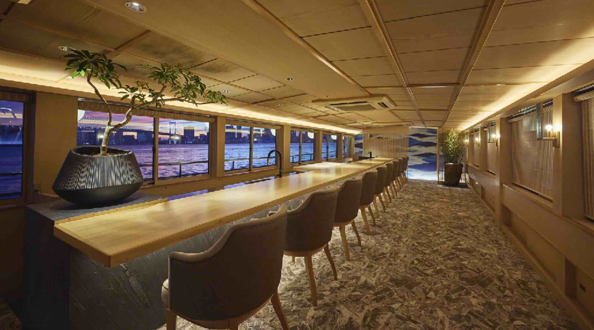
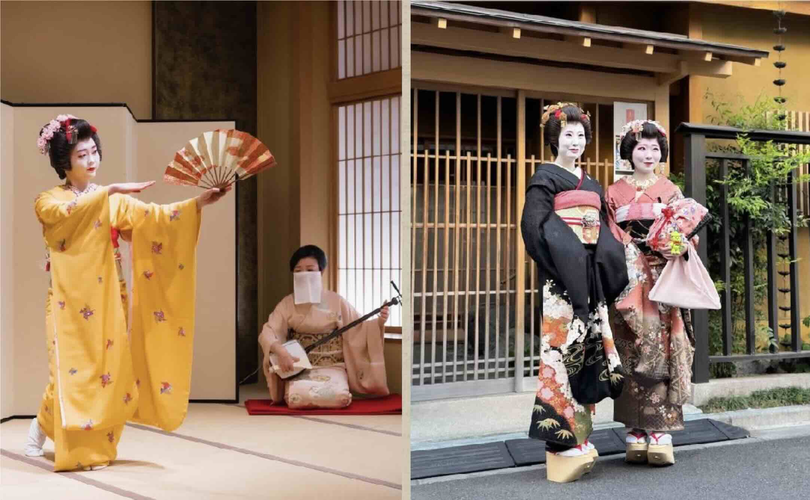
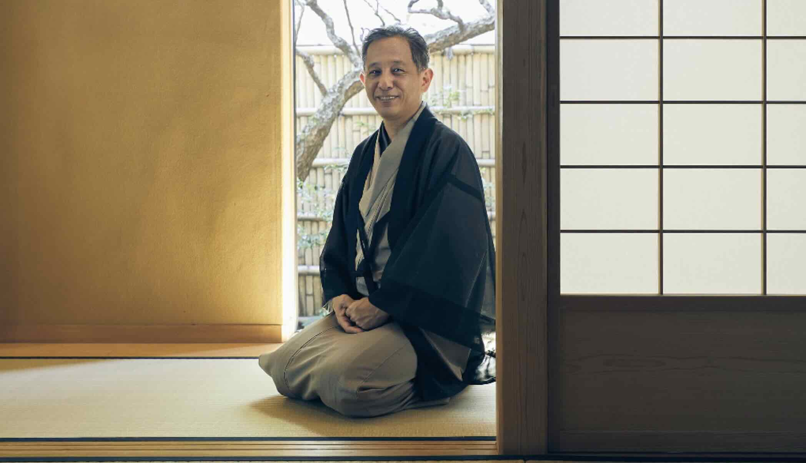
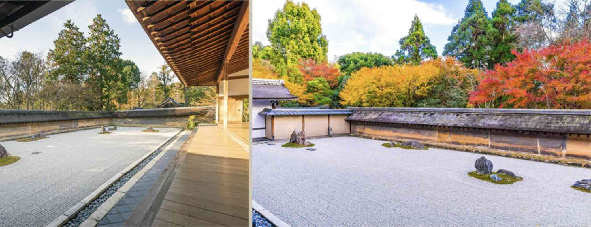
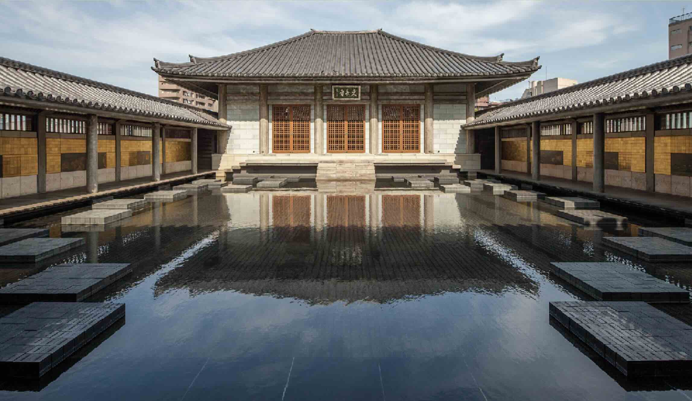

DAY 01 · TOKYO01/05
以更从容的节奏，在东京安静会合。
专车接送与充分休息优先于密集安排。晚间以少席怀石料理完成首次会面，让父母与同行家人安心进入旅程。
- 专车接送
- 从容节奏
- 家庭同行
东京 · 京都 · 富士山敬亲礼遇期 · 3组家庭席位
ARKSOMA CELL PROTOCOL · 001
从自体细胞采集、评估到长期生命档案建立，每一个环节都以审慎、可追溯和私人化为前提。我们管理的不是一次体验，而是面向未来的生命资产。
ARKSOMA PRIVATE ACCESS
每一期仅接受少量预约申请，以确保专业评估、医疗协调与在日接待在抵达前完成准备。未经提前沟通与专业评估，日本机构可能无法接收当次申请。
敬亲礼遇期为父母与长辈预留三组家庭席位。行程减少不必要的奔波，以两位同行为建议，亦接受单人申请。
续展参考 RMB 19,800 / 年 · 金额以当期配置为准
PRIVATE PASSAGE · FIVE DAYS
医疗安排与文化体验保持清晰边界。以下为本期建议路径，并根据身体状态、同行成员与季节进行定制。

DAY 01 · TOKYO01/05
专车接送与充分休息优先于密集安排。晚间以少席怀石料理完成首次会面，让父母与同行家人安心进入旅程。

DAY 02 · TOKYO02/05
上午按个人方案完成自体细胞采集与必要检查；休息并确认状态后，进入非公开制老字号料亭，在茶与舞之间体验延续数十年的艺伎文化。

DAY 03 · TOKYO03/05
探访里千家茶道大师私人宅邸，在平日不对外开放的茶室完成一期一会。三十余年的研习，被浓缩在器物、动作与留白之中。

DAY 04 · KYOTO04/05
依据长辈体力与天气选择平缓、安静的寺院或庭园路径，减少不必要的步行与等候，具体安排以当期状态确认。

DAY 05 · KYOTO05/05
以传统工艺、私人收藏或当代艺术交流结束首阶段。顾问整理后续医学安排与在日需求，让这次旅程成为长期生命管理的开始。
PRIVATE ADVISORY · 2026·九月三期
顾问将结合您的健康资料、时间与在日偏好，安排私密沟通。
RMB 560,000 · 敬亲礼遇期 · 3组家庭席位 · 截止 2026年8月25日
已包含首个 12 个月方舟年度席位